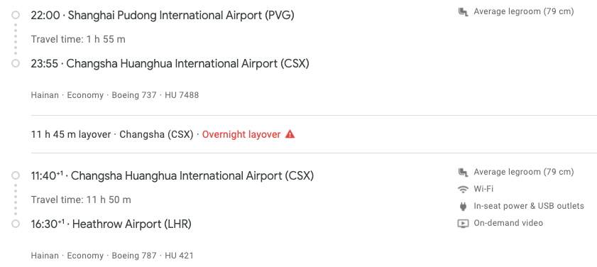
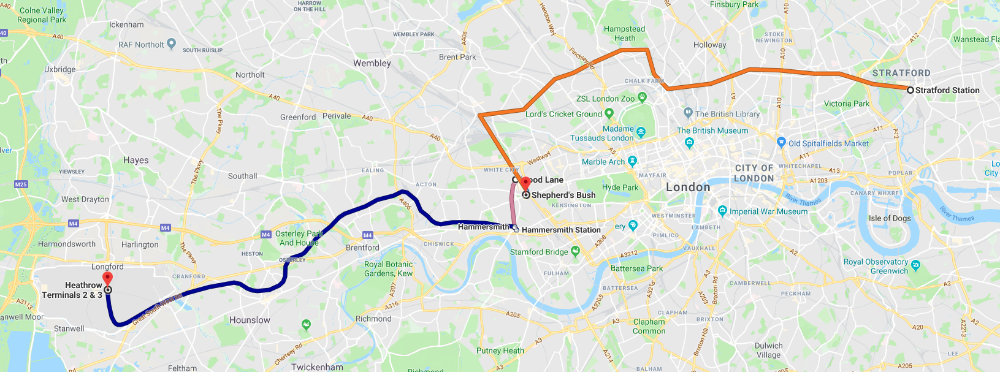
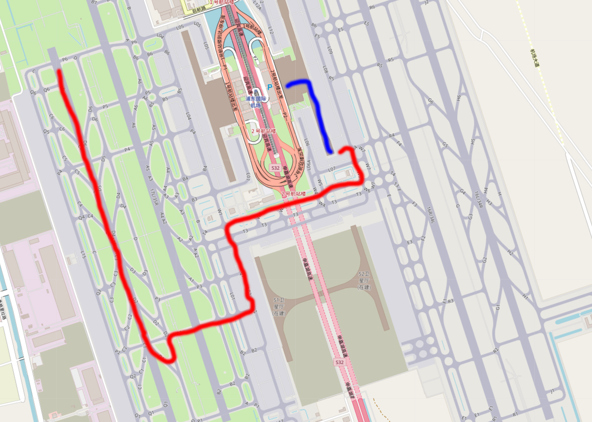

记一次从 Stratford (London) 前往宁波的旅程
Contents
购买机票
根据英国 Immigration Rules 中的 34K，在申请签证过程中离境则申请自动作废。由于出签时间又依赖诸多不确定因素，此次出行无法像往常一样，提前数月甚至大半年订票，从而轻松获得低廉的票价。相反，由于去程（7月）属暑期旅游旺季，回程（9月）属空中校车季，预期票价将非常可观。
首先在 Google Flights 中搜索 LON (6) - [NGB / SHA (2) / HGH] 的往返票，通过 Date Grid 功能发现 HU421 / HU422 经停 CSX 到达 PVG 的方案价格合理，往返含税大约 £570。可是仔细一看，回程需要在长沙停留近 12 小时。这怎么能行呢？（事后得知 HU 提供免费住宿，其实还是很行的）

那么能否提前自行前往长沙，玩耍两天后前往 CSX 呢？如果购买 LHR - CSX - PVG 则是不行的。不实际乘坐返程的 PVG - CSX 段将被拒绝乘坐 CSX - LHR，因为运输合同规定机票必须按顺序使用。如果只购买 LHR - CSX，则价格昂贵，因为 LHR - CSX - PVG 低廉的定价是用来吸引前往 PVG 的旅客的，而对于目的地是 CSX 的旅客，直飞自然要卖的贵一些了。
那么能否把 PVG - CSX 段提前几天呢？往返票搜不出这一选项，按多程搜索则价格上涨 £100+。
那么怎么才能干掉这个讨厌的 layover 呢？经过一番搜索，我发现早晨有一班 HGH - CSX 可以接上 CSX - LHR，并且满足条件可以出缺口程，于是定下了 LHR - CSX - PVG + HGH - CSX - LHR 的方案，价格持平 LHR - CSX - PVG 往返。
Google Flights 指示我可以去海航英国官网或 Expedia 购票，可是他们都搜不出这张票。就在我打算携程的时候，灵机一动发现海航中国官网能搜出来，且人民币报价和英镑持平，于是斥资 ¥4885 购买之。
那么如何从 PVG 前往宁波呢？灰机降落后去往宁波的火车和机场大巴均已停运。~~众所周知，~~MU在PVG 和 NGB 之间开行一对直达航班，用于衔接 PVG 的国际航班。但这个航班不能与之前的航班们出在一张票中，且只有 100 分钟完成从 T2 跑到 T1 的转机。于是我决定到了 PVG 再购票，并在 PVG 附近预定了一家可退的酒店作为后备。
前往机场
07-22 12:00 (BST) Westfield Stratford City
退房。离开酒店。拖着行李吃午饭。
如何前往机场呢？打开 Google Maps，想起来前两天 Circle Line 停运的时候这家伙还让我去坐，于是关掉，打开 City Mapper。果不其然，推荐路线是昂贵的 Southeastern HighSpeed + Circle Line + Heathrow Express，其中前后两段都有特殊的定价，且不受 Oyster daily cap 约束。Peak 时段这个方案的价钱将达到可怕的 £5.70 + £2.40 + £25.00 = £33.10，即便是 Off-peak 时段使用 Railcard 优惠，也需要 £2.65 + £1.60 + £14.50 = £18.75（不考虑 Heathrow Express 的 advance 票）。备选方案们是 Jubilee 转 Piccadilly，Central 转 Piccadilly 等，Peak 票价 £5.10，Off-peak + Railcard 票价 £2.05，耗时大约 85 分钟。
看起来挺合理，其实有三个问题：
- 晚高峰时段为 16:00 - 19:00。碰上就是 Peak 价，
在 16:00 之前到达机场则需要无所事事并花大价钱在机场吃饭，在 19:00 后出发则可能赶不上 22:00 的灰机。（2020-07-02 更正：其实 16:00 之前进站即可获得 Off-peak 票价，在 130 分钟的 MJT 内可以花式 OSI 出来吃饭） - 这几条线都没有空调，会热死。事实上在我离开几天后，Central Line 的温度达到了 40℃。
- 如在 Holborn 换乘，需要带着行李向上爬 19 级台阶，再向下爬 19 级台阶。
于是我自己规划了一条路线：
- 从 Westfield Stratford City 步行到 Stratford 站（约 5 分钟；£0）
- 趁 Off-peak 乘坐 Clapham Junction 方向的 Overground 前往 Shepherd’s Bush（约 50 分钟；£1.00）
- 步行到 Westfield London 休息（约 5 分钟；£0）
- 用晚膳
- 待 Peak 时段过去，顺便步行到 Wood Lane 站（约 5 分钟；£0）
- 乘坐 Circle 或 Hammersmith & City 前往终点站 Hammersmith，出站换乘 Piccadilly 前往 Heathrow Terminal 2 & 3（约 50 分钟；£1.00）

这条路线避开了上面的三个问题：
- 因没有经过 Fare Zone 1，共需花费 £2.00，价格合理。能在 Westfield London 吃上价格合理的晚餐。
- 由于这条 Overground 在地面上、能开窗、有空调，且最后一步坐上那几条线时它们也已经爬出地面，不会被热死。
- Hammersmith (Circle / Hammersmith & City) 站就在地平面不需要上下楼，其他相关车站均配有直梯，行李友好。
在实际操作过程中，还有几个小技巧能够节省时间：
- 按照 City Mapper / Station Master 的建议选择靠近出口 / 换乘站台的车厢。
- Peak 时段实际上有几分钟的 grace period，可以据此提前进站。
- 终点为 Heathrow T4 & T123 的 Piccadilly Line 会在 T4 停靠相当长的时间再前往 T2 / T3，前往 T2 / T3 尽量乘坐终点为 Heathrow T123 & T5 的列车。
HU422 LHR - CSX
07-22 20:00 (BST) Heathrow Airport Terminal 3
HU 在 Heathrow 的截载时间是起飞前 60 分钟，时间绰绰有余。登机后发现选 D 和 G 的选座大法失败了，E 有人坐。HU422 的经济舱配置了椰子汁和洗漱包，但是没有苹果汁，于是我喝完椰子汁后刷了牙。
07-23 15:45 (CST) 长沙黄花国际机场
HU 还未在 CSX 开通它的通程值机服务，于是过边检取行李过海关回到出发层重新值机安检。由于时间紧张，未能光顾位于安检外的茶颜悦色。
HU7487 CSX - PVG
07-23 17:35 (CST) 长沙黄花国际机场
这架灰机的空调口配置了肉眼可见的冷气，效果良好。
07-23 20:09 (CST) 上海浦东国际机场
飞行 1 小时 31 分后降落在 PVG 的 17R。然后我经历了速度最快时间最长的一次滑行。灰机沿着红线（我瞎画的）滑到了 T2 最南边的某个登机口靠了桥（20:20）。我带着行李沿着蓝线（我认真画的）跑啊跑跑啊跑跑啊跑终于来到了行李转盘，他也还算争气及时吐出了我的箱子。
MU5700 PVG - NGB
07-23 20:35 (CST) 上海浦东国际机场
于是我继续跑啊跑跑啊跑跑啊跑来到了 T1，通过防爆安检后大约是 20:50。MU 国内航班在 PVG 的截载时间是起飞前 40 分钟。20:54 于官方 app 购票，半分钟内出票成功，值机安检均没有什么人排队，顺利到达登机口。
和想象的不大一样，MU5700 PVG - NGB 段几乎坐满。
07-23 22:02 (CST) 上海浦东国际机场
起飞。
07-23 22:27 (CST) 宁波栎社国际机场
飞行 25 分钟后成功降落。
乘坐摆渡车时发现旁边有人在骑摩拜。上网搜索后发现是真的：整机放行工程师 你不知道的事。
最后的感想：啊热死我了。
Author SEIAROTg
LastMod 2020-07-02